在中世纪的阿拉伯，虽然在数学和科学领域主要受希腊和印度的影响，但在文化方面，无疑波斯的影响更大，这一点不亚于处于希腊文明影响之下的马其顿，后者产生了像亚里士多德那样的全才。除了果断和英勇善战以外，阿拉伯人的优点还在于，他们具有出色的组织和管理才能，以及包容大度的良好心态。但在理性和智慧方面，他们尚不及波斯人。事实上，阿拉伯人只有两种东西保全下来，一种是变成国教的伊斯兰教，另一种是变成国语的阿拉伯语。在首都巴格达，波斯头衔、波斯酒、波斯太太、波斯情妇、波斯歌曲等，逐渐成为时尚。
相传哈里发曼苏尔是第一个戴波斯高帽子的，他的臣民自然会效仿他。在他的政府中，首次出现了波斯官职——大臣，并且是由一个拥有波斯血统的人担任。哈里发让妻子和这位大臣的妻子相互哺育对方的女儿，并让大臣的儿子教导自己的儿子哈伦·拉希德。但是好景不长，当哈伦·拉希德从麦加朝觐回来，却发现这位年轻的老师已让他的妹妹怀孕并偷偷地生子，而这个妹妹偏偏因为被哈伦·拉希德过分宠爱而不准嫁人。结果那位异乡人人头落地，尸体被剖成两半，挂在巴格达的两座桥上示众。
更为不幸的是，马蒙死后，阿拔斯王朝便走上了下坡路。在巴格达周围，出现了许多小王朝，政局持续动荡，帝国被一点点儿瓜分，剩下的权力也逐渐被军人掌控。一支禁卫军起义了，接着爆发了黑奴起义，宗教派别层出不穷，中央政权的根基迅速瓦解。这个时候，波斯人和突厥人又把短剑对准了它的心脏。尽管如此，10世纪的巴格达郊外仍诞生了波斯数学家凯拉吉（Karaji，约953—约1029），他在二项式定理（晚于印度人但略早于贾宪探讨了这个问题）、代数学、线性方程组解法以及数学归纳法方面均有建树。1067年，在巴格达创建了伊斯兰世界的第一所大学——尼采米亚大学，但却没有吸引像欧玛尔·海亚姆那样聪颖智慧的青年才俊。
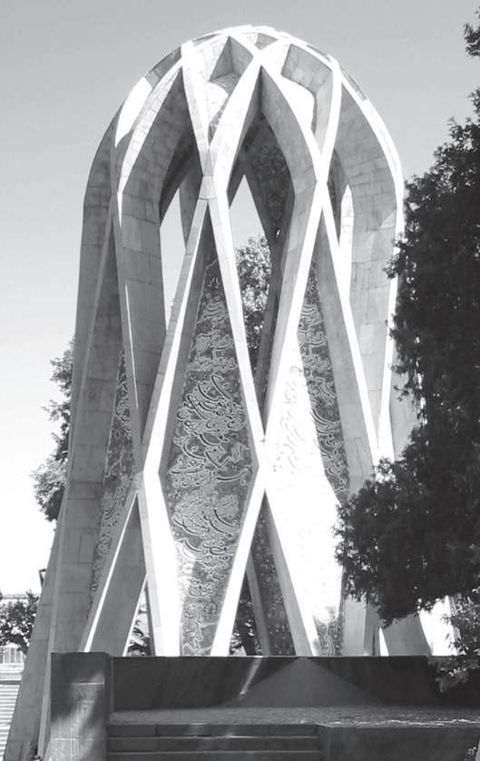
内沙布尔的海亚姆纪念碑
大约在1048年，伊斯兰世界最具智慧的人物——欧玛尔·海亚姆（Omar Khayyam）出生在伊朗东北部霍拉桑地区的古城内沙布尔，他于1131年去世。“海亚姆”是指制造或销售帐篷的职业，这说明他的父亲或祖辈是从事这项工作的。可能出于这个原因，他得以跟随父亲在各地游历，先在家乡，后在阿富汗北部小镇巴尔赫接受教育，接着来到中亚最古老的城市撒马尔罕，海亚姆在当地一位有政治背景的学者庇护下，从事数学研究。
在欧几里得的《几何原本》里有用几何方法解形如x2 +ax=b2 的二次方程的例子，其中的一个解是
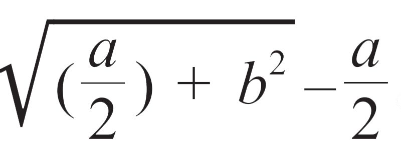
。它可以用毕达哥拉斯定理来求取：作一个两直角边分别为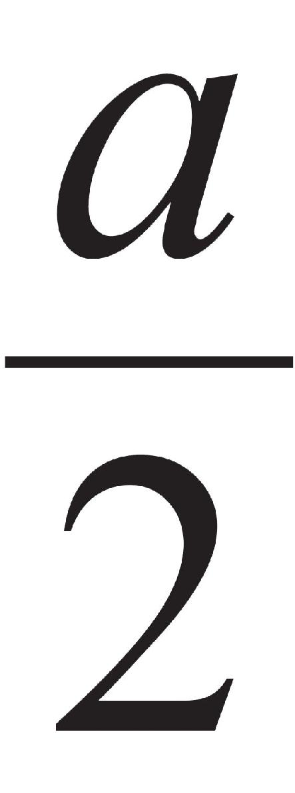
和b的直角三角形，在斜边上去掉长度为 的线段之后，剩下部分的长度即为所求之解。三次方程的求解方法显然更为复杂，海亚姆考虑了14种类型的方程，通过两条圆锥曲线的交点来确定它们的根。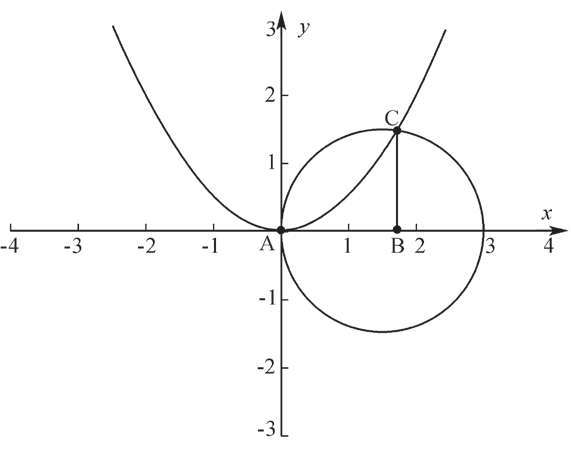
借助此图，海亚姆求得三次方程的解
以方程x3 +ax=b为例，它可以改写成x3 +c2 x=c2 h。在海亚姆看来，这个方程恰好是抛物线x2 =cy和半圆周y2 =x（h–x）交点C（如上图）的横坐标x。因为从后两式中消去y，就可得到前面的方程。于是，海亚姆有了用圆锥曲线解三次方程等数学发现，并完成了一部《代数问题的论证》。此外，他在证明欧几里得平行（第五）公设方面也做了非常有益的尝试。
也是在11世纪，一个叫塞尔柱的由土耳其突厥人建立的王朝崛起，领土从伊朗和外高加索一直延伸到地中海，他们也是举着伊斯兰教的旗帜。后来，海亚姆在塞尔柱苏丹马利克沙的邀请之下来到首都伊斯法罕，主持新建天文台的工作并进行历法改革。事实上，这是海亚姆的立足之本和生活的保障，而数学发现则是他的副业。他提出在平年365天的基础上，每33年增加8个闰日。这样一来，与实际的回归年仅相差19.37秒，即每4460年的误差只有一天。这比现在全世界通行的公历还要准确，可惜因为领导人的更迭而未能实施。
海亚姆在伊斯法罕度过了他一生中的大部分时光，伊斯兰教义、塞尔柱宫廷和波斯血统这三者在他身上交替呈现，时局的动荡和怪异的个性导致他的生活并不称心如意。他终生独居，不时地把头脑里那些不合时宜的思想悄悄地用波斯语记录下来，以在霍拉桑地区流行的四行诗为载体。恐怕海亚姆自己也没有想到，800年后一位叫爱德华·菲茨杰拉德的英国人把他的诗集《鲁拜集》（意为四行诗）翻译成英文，使他成为名扬世界的诗人，而他的数学发现则成为“古董”。例如，海亚姆在一首四行诗中这样叹息自己从事的历法改革的夭折（《鲁拜集》第57首）：
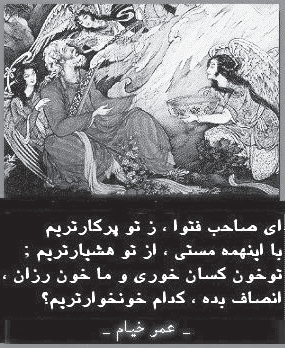
海亚姆的四行诗和插图
啊，人们说我的推算高明
纠正了时间，把年份算准
可谁知道那只是从旧历中消去
未卜的明天和已逝的昨日
作为雅利安人的一支，伊朗人很可能是在公元前2000年到前1000年去往欧洲的那个印欧语系的中亚游牧民族的一部分，他们在西迁途中留了下来，“伊朗”一词的原意便是“雅利安人之乡”。这样一来，他们就与先前进入印度的那部分雅利安人同宗。不同的是，后者与被称作达罗毗荼人的原住民通婚，因此肤色变得黝黑。至于波斯（Persia）这个名字，则是由于伊朗中南部地区法尔斯（Fars）的古称为波尔斯（Persis），法尔斯的中心城市是有着“玫瑰花和诗人的城市”之誉的设拉子。
法尔斯是波斯的发祥地，波斯帝国的缔造者居鲁士大帝（Cyrus，约公元前600—前530）就出生在那里。公元前6世纪，他从故乡的一个小首领起家，打败了巴比伦等帝国，建立起范围从印度到地中海的大帝国。居鲁士死后，他的一个儿子以及他的一个大臣的儿子大流士继续扩张，把埃及也纳入帝国版图，以至于在那里游学的毕达哥拉斯被抓到巴比伦，而帮助破解巴比伦楔形文字之谜的伊朗西部贝希斯敦石崖上所刻文字正是讲述大流士如何登上王位的一篇铭文。据说柏拉图学园被迫关闭以后，许多希腊学者跑到波斯，播下了文明的种子。
在海亚姆过世约70年（其间意大利的斐波那契和中国的李冶相继出世）以后，波斯的图斯城（也属霍拉桑省）又诞生了一位了不起的智者纳西尔丁（1201—1274）。图斯是当时阿拉伯的文化中心，哈伦·拉希德在此去世。纳西尔丁的父亲是一位法理学家，他给儿子以启蒙教育，同城的舅舅则教他逻辑学和哲学。此外，他还学习了代数和几何。后来，他来到海亚姆的故乡内沙布尔深造，跟随波斯哲学家兼科学家伊本·西拿（980—1037）的门徒学习医学和数学，并逐渐成名。值得一提的是，伊本·西拿的拉丁文名叫阿维森纳（Avicenna），他在东方被尊为“卓越的智者”，在西方则被誉为“最杰出的医生”。
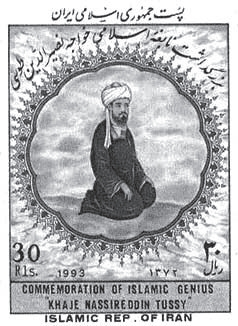
伊朗发行的纳西尔丁纪念邮票
此时，蒙古大军正大举西进，阿拉伯帝国摇摇欲坠。为了求得一个安宁的学术环境，纳西尔丁受邀到几处要塞居住，写出了一批数学、哲学等方面的论著。1256年，成吉思汗的孙子、蒙哥大汗（1209—1259）的胞弟旭烈兀（1217—1265）征服了波斯北部，占领了纳西尔丁所在的要塞。没想到，旭烈兀相当敬重纳西尔丁，邀请其入朝担任科学顾问。两年后，纳西尔丁又随旭烈兀远征巴格达，那是一场残酷血腥的战争，宣告了阿拔斯王朝的灭亡。
长兄蒙哥去世后，四哥忽必烈继位，成为元世祖，旭烈兀被封为伊利汗国国王，从此便留在波斯，定都大不里士（伊朗西北部名城，邻近阿塞拜疆）。此前在旭烈兀的批准和资助下，纳西尔丁在大不里士城南建造了一座天文台。他广招贤士，著书立说，还制作了许多先进的观察仪器，使得天文台成为当时重要的学术中心。1274年，73岁的纳西尔丁出访巴格达，不幸患病逝世，被安葬在郊外。旭烈兀死在他前面，早已把整个波斯纳入版图，巴格达也包括在内。到他的孙子统治时期，伊利汗国的领土“东起阿姆河，西至地中海，北自高加索，南抵印度洋”。
纳西尔丁一生勤于著述，留下的论著和书信无数，大多是用阿拉伯文书写的，少数哲学、逻辑学的则用波斯文书写。据说他还懂得希腊语，个别论著中甚至出现了土耳其语。至于内容，涉及当时伊斯兰世界的所有学科，其中尤以数学、天文学、逻辑学、哲学、伦理学和神学方面的影响较大。它们不仅在伊斯兰世界被奉为经典，也对欧洲科学的觉醒产生了影响。据说纳西尔丁制作的天文观察仪器还被带到了中国，并被同行借鉴。
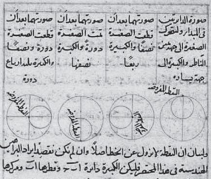
纳西尔丁的数学手稿
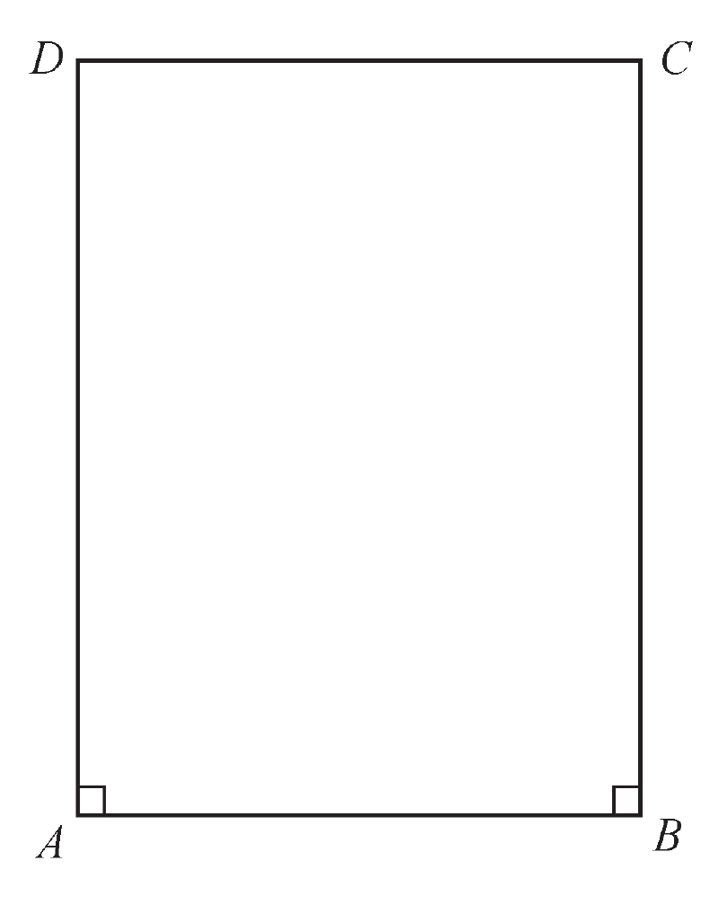
用以证明平行公设的四边形
纳西尔丁在数学方面的著作一共有三部。《算板与沙盘计算方法集成》主要讲算术，他继承了海亚姆的成果，将数的研究扩展到无理数等领域。书中采用了印度数字，谈到了帕斯卡尔（贾宪）三角形，还讨论了求一个数的四次或四次以上方根的方法，成为现存的记载这种方法的最早论著。有意思的是，纳西尔丁得出了“两个奇数的平方和不可能是一个平方数”这一重要的数论结论，这个结论的证明通常依赖于数论中的同余数理论。
更值得注意的是《令人满意的论著》，这部书讨论了几何学特别是欧几里得平行公设。纳西尔丁曾两次修订和注释《几何原本》，对平行公设做了较深入的探讨。纳西尔丁试图利用其他公理和公设证明平行公设，为此他沿用了海亚姆的方法：假设有一个四边形ABCD，DA和CB等长且均垂直于AB，则∠C和∠D相等。他证明了，如果∠C和∠D是锐角，则可推导出一个三角形的内角和小于180°，这正是罗巴切夫斯基几何的基本命题。
纳西尔丁最重要的数学著作是《横截线原理书》，这是数学史上流传至今最早的三角学专著。在此以前，三角学知识只出现在天文学论著中，是附属于天文学的一种计算方法，而纳西尔丁的工作使得三角学成为纯粹数学的一个独立分支。正是在这部书里，首次出现了著名的正弦定理：
设A、B、C分别为三角形的三个角，a、b、c是它们所对应的边的长度，则
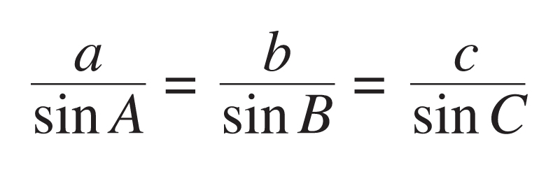
在天文学方面，纳西尔丁的贡献同样卓著，在这里我就不赘述了。据说他的两个儿子也在大不里士城南的那座当时世界上最先进的天文台工作，还有一个中国人，但他的姓名和来历已无法查证了。据《元史》记载，元初曾有阿拉伯人在中国“造西域仪象”7件，有些仪器与纳西尔丁制作的颇为相像。同样，18世纪印度人在德里等地建造的几座天文台在外表和结构上也模仿了纳西尔丁的天文台。
伊斯兰教的魅力在于，穆斯林用武力夺取的领土可能在一段时间以后失去，但被征服的人们却大多数从此皈依伊斯兰教。伊朗或波斯便是一个典型的例子，自从640年由于与拜占庭帝国的战争付出高昂的代价而被阿拉伯人乘机征服后，这片土地几易其主，可是至今它的国徽和国旗仍带有浓厚的伊斯兰味道。前者由弯月、宝剑和书籍组成，弯月和宝剑分别是伊斯兰教和力量的象征，高高在上的书籍则是《古兰经》。后者是蓝、白、红三色，在蓝和白、白和红之间均用波斯语写满了“真主伟大”字样。
现在，我们要谈谈古代阿拉伯世界（也是整个东方）最后一位重要的数学家和天文学家卡西，人们常以他的卒年（1429）作为那个时代的终结。可是，卡西的生年却没有任何记载，他的活动最早见诸文献是在1406年6月2日，当时他在家乡卡尚观测到一次月食。卡尚位于伊朗罗斯山脉东麓，故都伊斯法罕和首都德黑兰的铁路线中间。尽管卡西可能出身平凡家庭，但他与他的波斯前辈海亚姆和纳西尔丁一样，很早就得到了权贵人士的赏识。
14世纪末，成吉思汗的后裔、中亚细亚的帖木儿（1336—1405）建立了帖木儿王国，定都撒马尔罕。他本是信仰伊斯兰教的突厥化蒙古人，主要以其野蛮地征服从印度、俄罗斯到地中海的辽阔土地以及王朝的文化成就被载入史册。帖木儿打着重建蒙古帝国的旗号，所向披靡，直到埃及苏丹和拜占庭皇帝向他屈服纳贡以后，才返回撒马尔罕。虽然目不识丁，帖木儿却愿意与学者交往，并嗜好下棋，能够与第一流的学者讨论历史、伊斯兰教义和应用科学的各种问题。
撒马尔罕的古城门
1405年，正当帖木儿准备再度出发，率军远征中国（此时元朝早已灭亡），却因病去世了。他的孙子兀鲁伯（1394—1449）不仅不尚武，而且痴迷天文学，并通过观测发现了天文学家托勒密的多处计算错误。同时，兀鲁伯还写诗、研究历史和《古兰经》，并且是科学与艺术的积极倡导者和保护者。年轻时，他就在撒马尔罕创办了一所教授科学和神学的学校，不久又建造了一座天文台，使撒马尔罕成为东方最重要的学术中心。
卡西的学术生涯与兀鲁伯息息相关，卡西曾是一名医生，却渴望从事数学与天文学的研究。在长期的贫困与彷徨之后，卡西终于在撒马尔罕找到了一个稳定又体面的职位，那就是在兀鲁伯的宫殿里协助策划与开展科学工作。卡西积极参与天文台的修建和仪器的安装，成为兀鲁伯的得力助手，并且在天文台建成以后担任负责人。在《天的阶梯》等天文学著作里，卡西论述了星辰的距离和大小，介绍了浑仪等天文仪器，有的还是他的独创。当然，历法改革也是不可缺少的。
在给父亲的一封信里，卡西极力称赞兀鲁伯渊博的知识、组织能力和数学才华；他还提到当时讨论科学时的自由空气，声称这是科学进步的必要条件。兀鲁伯对待科学家非常宽厚，特别能谅解卡西对宫廷礼仪的疏忽，以及缺少良好的生活习惯。在一部以他自己的名字命名的历法书的序言中，兀鲁伯提到了卡西之死，“卡西是一位杰出的科学家，是世界上最出色的学者之一。他通晓古代科学，并推动其发展，他能解决最困难的问题”。
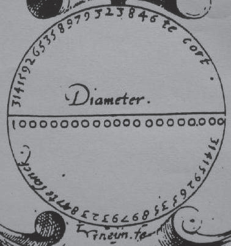
卡西的圆周率
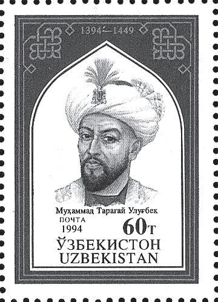
乌兹别克发行的王子兀鲁伯纪念邮票
卡西在数学上取得了两项世界领先的成就，一是圆周率的计算，二是给出sin1°的精确值。在古代，对圆周率π的研究和计算，在一定程度上反映了这个地区或时代的数学水平，就如同今天对最大素数的求取，代表了某个大公司甚或国家计算机研发的先进程度。1424年，在中国数学家祖冲之把π的值精确到小数点后7位的962年之后，卡西终于打破了这项世界纪录，他算出精确到小数点后17位。卡西算到了正3×228 边形的周长，直到1596年，荷兰数学家科伊伦（L.Ceulen，1540—1610）才通过圆内接和外切正60×233 边形，算出π的小数点后20位的精确值。
π=3.14159265358979325
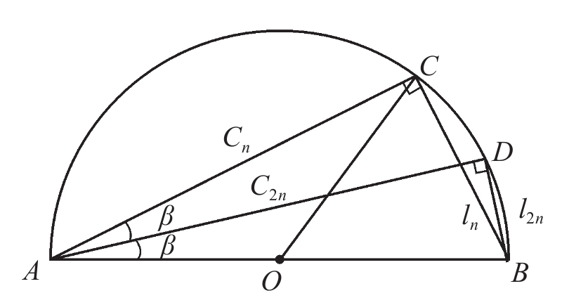
卡西利用此图计算圆周率
最后，我们介绍卡西计算圆周率的方法。如上图所示，设AB=2r是圆的直径，ln （l2n ）是内接于圆的正n（2n）边形的一边之长，则另外两条直角边cn 和c2n 有如下递推关系：
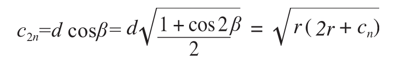
而由毕达哥拉斯定理可知：
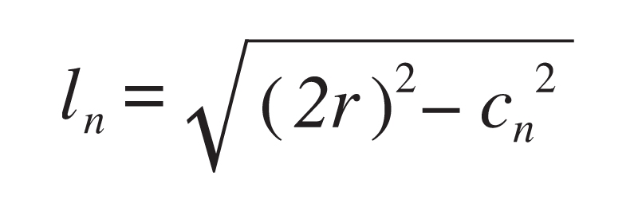
类似地，可求得圆外切正多边形的边长。取两者的算术平均值作为圆周长，即可求得圆周率。与刘徽的割圆术相比，卡西利用了余弦函数的半角公式，这样只需计算一次根号就可倍增正多边形的边数。